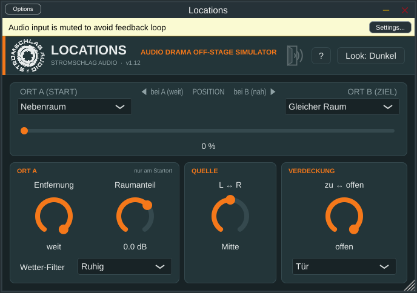
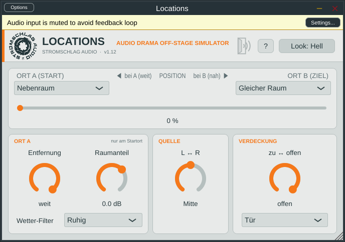

LOCATIONS
Audio Drama Off-Stage Simulator · Stromschlag Audio
Ein VST3-Effekt für Hörspielproduktionen. Er setzt eine Stimme oder ein Geräusch in einen anderen Raum, eine andere Etage, hinter eine Verdeckung oder in die Ferne im Freien – und lässt es mit einem automatisierbaren Regler heranrücken.
⬇ Download (Windows, VST3)Was es kann
- Quelle platzieren: tief im Wald, hinter einer geschlossenen Tür oder im Keller.
- Quelle bewegen: eine Tür öffnet sich, während jemand spricht, oder jemand kommt aus dem Nebenraum herein.
- Ein Hauptregler: „Position (A nach B)“ ist der Regler, den man automatisiert. Alles andere stellt man einmal ein.
- Orte: 17 Umgebungen innen und draußen (z. B. Keller, Kirche, Tiefgarage, Wald, Schlucht), dazu Verdeckungen wie Tür, Fenster, Autoscheibe, Schrank, Kofferraum oder Unter Wasser. Die Verdeckung wirkt unabhängig von der Position, also auch, wenn die Quelle ganz nah ist.
- Wetter-Filter für draußen: Ruhig, Wind / Regen, Sturm. Er verändert nur den Klang.
- Vergrößerbare Oberfläche von 50 % bis 300 %, hell und dunkel.
Oberfläche


Für wen
LOCATIONS ist bewusst für Stereo-Hörspiele gemacht. Für Surround (5.1) oder binaurale Produktionen gibt es andere Lösungen.
Mehr
Anwendungsbeispiele, alle Orte und Regler, die Versionshistorie und den Quellcode gibt es in der README auf GitHub.